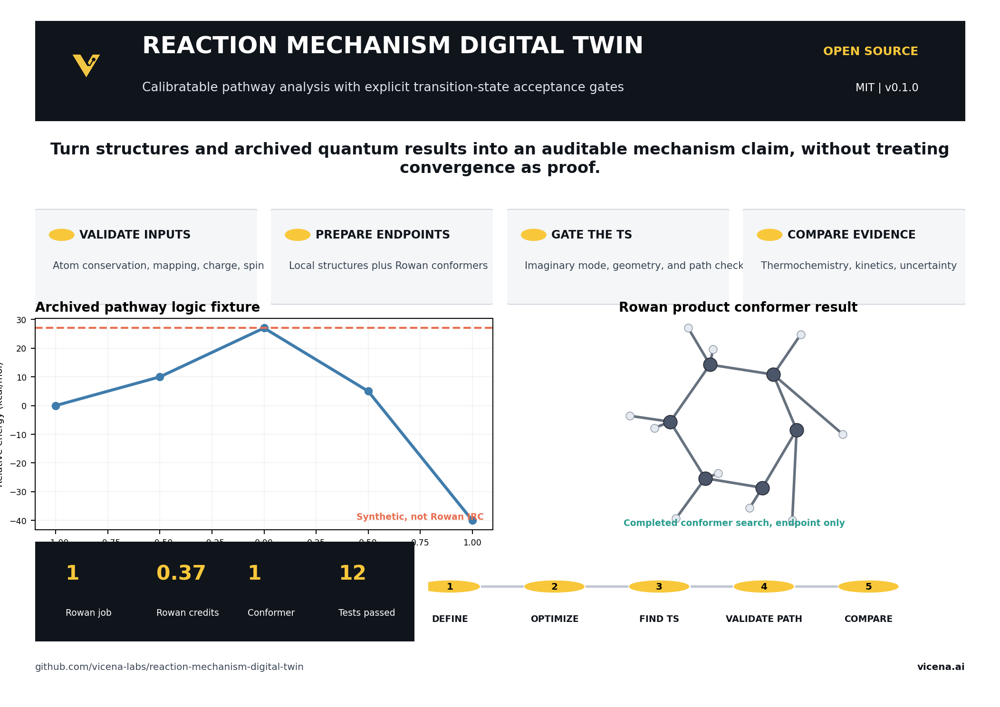
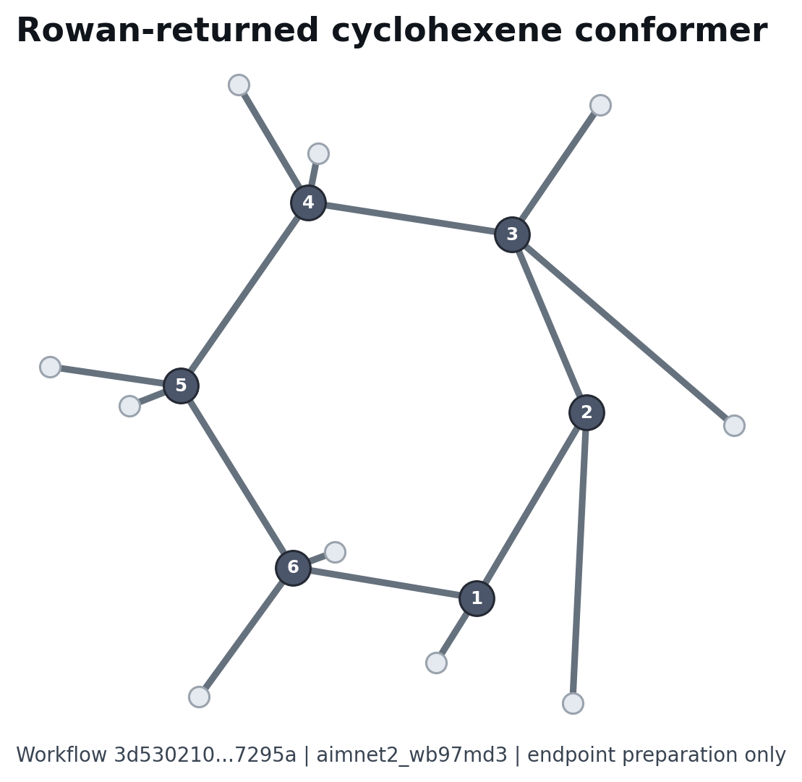

Implemented capabilities
Validate
Conservation, mapping, charge, multiplicity, units, and conditions.
Prepare
Local structures and archived Rowan conformer outputs.
Gate the TS
Frequency, displacement, geometry, mapping, and path evidence.
Compare
Thermochemistry, kinetics, literature, uncertainty, and sensitivity.
Saved Rowan result

One product conformer search completed. This endpoint result does not validate a transition state or IRC pathway.
Quick start
pip install -e .[dev,chem] pytest -q python scripts/analyze_archived.py